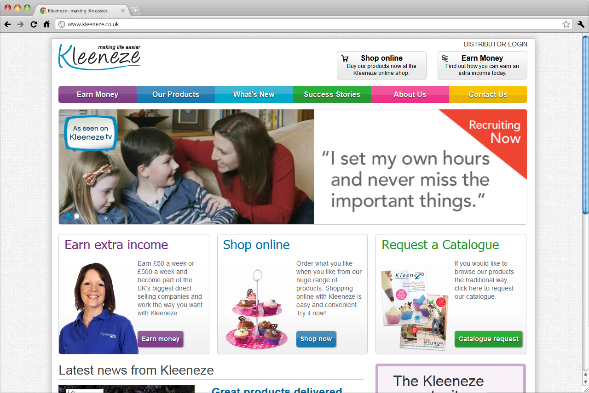

 using
usingPHP
WordPress
I am currently redesigning Kleeneze.co.uk to make use of the Bootstrap framework as this project was an earily adopter of responsive and makes use of the retro 960.gs framework. Primary focus is generating more Distributor leads for our network.